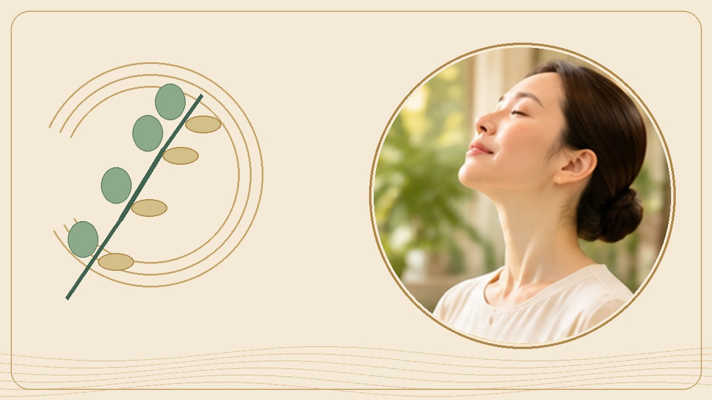

集中作業の合間、光、音、休息環境から、短い静かな時間を確保します。
長時間集中したらまず中断を調整する
読書、会計整理、パソコン、家族の世話では知らないうちに同じ活動が続きます。頭部周辺の日常の休息はまず作業から離れることから始め、すぐ手技をする必要はありません。画面から視線を外し、安全な場所で座るか立って歩き、そのときの状態に応じ慣れた休息を選びましょう。
環境は簡単に調整できる
窓辺の柔らかな自然光を好む人も、静かな室内の一角を好む人もいます。職場の音や光が多い場合は休憩時に刺激の少ない場所を選べます。快適さに高価な設備、音楽、香りは必須ではありません。換気、適切な照明、安全な座席の方が固定の養生空間より日常に合うことがあります。
休息と仕事を明確に分ける
休息中も返信を続けると仕事のリズムから離れにくくなります。作業の完了後に端末を置き、水を飲んだり窓の外を見たりしましょう。治療方法ではなく、休憩時間を厳密に決める必要もありません。続けられる節目を選び、勤務に応じ調整して新たな負担にしないようにします。
頭部周辺のリラクゼーションを相談する際の注意
関連する日常の手技に関心があれば、対応可否、実際の接触範囲、方法を江瑞玲に確認しましょう。頭、顔、首は同じサービスではなく、すべてに同意する必要もありません。本記事は自己施圧の位置、力、回数を示しません。特定の身体の問題は医療従事者の評価を受けてください。
異常を一般的な疲れとみなさない
突然または強い頭部の不調、反復・持続する不調があれば、休息やマッサージで代えず先に医療の助けを求めてください。日常のリラクゼーションと医療は別です。予約済みでも身体状態に応じキャンセルや変更ができます。日常の休息は生活に適切な時間を残すためであり、不調の原因を判断する方法ではありません。
実際の予定に静かな時間を組み込む
昼休みが短ければ、返信しなくてよいひとときを選びましょう。自宅で家族を世話する方は助けがある時に短く休めます。数分でも特定の雰囲気のため一式の器具を準備する必要はありません。安全、便利さ、必要な責任に支障がないことを休息場所の前提にしましょう。
よくある質問：休息には目を閉じたり頭をマッサージしたりする必要がありますか？
必要ありません。安全に座る、仕事を置く、短く歩く、窓外の景色を眺めることも選べます。目を閉じるのが不快なら自然な視線のままでよく、接触が苦手ならマッサージを調整しなくても構いません。自分の状況で選び、身体の異常と日常の休息を分けて考えましょう。
参考資料
国民健康署｜日常生活に活動を取り入れる（閲覧：2026-11-26）
衛生福利部｜民俗調理業者の広告掲載時の注意（閲覧：2026-11-26）
台北栄民総医院｜頭部の異常時の受診安全上の注意（閲覧：2026-11-26）
本文は一般的な生活・文化情報で、個別の医療助言ではありません。本人による確認待ちです。実際のサービス内容、料金、時間、場所はお問い合わせで確認してください。